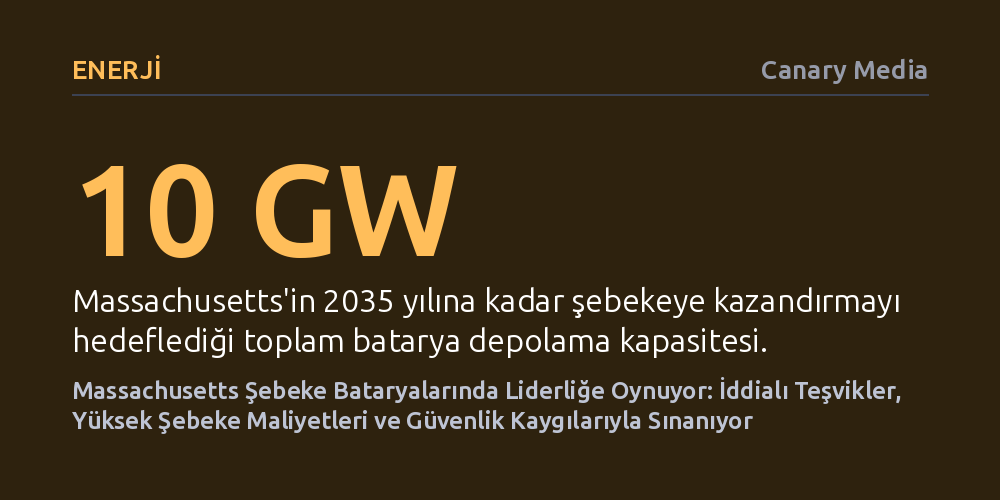

ENERJI · Canary Media · 2026-10-27
Massachusetts, 2035’e kadar 10 gigavatlık batarya depolama hedefi ve sunduğu teşviklerle ABD’de liderliğe oynuyor. Ancak 200 milyon doları aşan şebeke bağlantı maliyetleri ve yerel yangın endişeleri projelerin önündeki en büyük engelleri oluşturuyor.
Yenilenebilir enerjiye geçişte asıl darboğazın üretim değil, depolama sistemlerinin şebekeye bağlanma maliyetleri ve toplumsal kabul olduğunu gösteriyor.

ABD'nin kuzeydoğusundaki Massachusetts eyaleti, büyük ölçekli şebeke bataryaları konusunda dikkat çekici bir inşa hamlesine sahne oluyor. Boston'ın hemen dışında planlanan 700 megavatlık tesis bölgedeki mevcut tüm depolama projelerini gölgede bırakmaya hazırlanırken, bir sonraki kasabada 250 megavatlık başka bir proje için 850 milyon dolarlık finansman paketi tamamlandı. Rhode Island sınırında ise yıl sonuna kadar devreye girmesi beklenen 200 megavatlık bir deponun temelleri atıldı.
Bu projeler münferit girişimler değil; eyaletin 2030 yılına kadar 5 gigavat, 2035 yılına kadar ise toplam 10 gigavat batarya depolama kapasitesine ulaşma planının birer parçası. Kaliforniya gibi güneş zengini eyaletler toplam kurulu güçte önde olsa da, 10 gigavatlık taahhüt ABD eyaletleri arasındaki en yüksek resmi hedefi temsil ediyor. Ülkenin en pahalı elektrik tarifelerinden birine sahip olan eyalet, bataryaları hem temiz enerjiyi dengelemek hem de aşırı hava olaylarında şebeke kesintilerini önlemek için zorunlu bir kaldıraç olarak görüyor. Eyalet Enerji Kaynakları Dairesi Komiseri Elizabeth Mahony durumu şöyle özetliyor: “Sistemde depolama kapasitemiz olursa, yükü yönetmek için enerjiyi farklı zamanlarda devreye sokabiliriz.”
Geliştiricilerin eyalete yönelmesi tesadüf değil; son on yılda adım adım inşa edilen kapsamlı bir politika altyapısının sonucu. Eyalet, 2015'te başlattığı Enerji Depolama Girişimi ile 2025 için koyduğu 1 gigavatlık hedefi aşarak 1,6 gigavat seviyesine ulaştı. Bu ivmenin merkezinde üç temel politika aracı yer alıyor: 2020'de yürürlüğe giren ve elektrik talebinin zirve yaptığı saatlerde şebekeye temiz enerji veren tesislere ek ödeme yapan "Clean Peak Standard", depolama yatırımlarını kârlı kılan kritik bir gelir kalemine dönüştü.
Mali teşviklerin yanı sıra idari engeller de hafifletildi. 1 Temmuz'da yürürlüğe giren yeni izin reformu, 100 megavat ve üzerindeki depolama projelerinin onay yetkisini dağınık yerel belediyelerden alıp merkezi Eyalet Enerji Tesisleri Yer Seçimi Kuruluna devretti. Kurula başvurulardan itibaren azami 15 ay içinde karar verme zorunluluğu getirilmesi, yıllarca sürebilen belirsizlikleri azalttı. Eyaletin açtığı 1,3 gigavatlık ilk depolama ihalesinin ardından düzenlenen ikinci ihaleye tam 35 firmanın teklif vermesi, bu düzenlemelerin piyasada yarattığı güveni ortaya koyuyor.
Tüm bu teşvik ortamına rağmen sektörün önünde ciddi bir mali engel yükseliyor: bataryaları mevcut elektrik iletim hatlarına bağlamanın öngörülemeyen altyapı maliyetleri. Eylül ayında Tewksbury kasabasında planlanan 125 megavatlık bir projenin iptal edilmesi, tablonun ciddiyetini gösterdi. Geliştirici şirket, projeyi şebekeye bağlamak için gereken altyapı yükseltme bedelinin 65 milyon doları bulması üzerine yatırımdan vazgeçti.
Üstelik bu rakam bir istisna değil. Bölgesel şebeke operatörü ISO New England tarafından yürütülen güncel bir inceleme, Massachusetts'te önerilen birçok batarya projesinde bağlantı masraflarının 200 milyon doları aştığını belgeledi. Proje bütçelerini sarsan ve geliştiricilerin beklentilerinin çok üzerinde kalan bu altyapı harcamaları, planlanan yatırımların hayata geçmesini zorlaştıran temel risklerden biri olmaya devam ediyor.
Maliyetlerin ötesinde projeler yerel toplulukların direnciyle karşılaşıyor. Oakham kasabasında planlanan 180 megavatlık tesis, olası bir yangında içme suyu havzasının kirlenebileceği endişesiyle bölge sakinlerinin tepkisini çekti; benzer kaygılar geçen yıl Westfield'daki bir projeyi de durdurmuştu. Geçmişte Kaliforniya'daki Moss Landing tesisinde yaşanan yangınların medyada geniş yer bulması, kamuoyundaki güvenlik endişelerini canlı tutuyor.
Buna karşılık sektör uzmanları, kamuoyundaki korkuların güncel teknolojiyle uyuşmadığına dikkat çekiyor. Geçtiğimiz yıllarda gündeme gelen yangınların hemen hepsi eski nesil teknolojilerden kaynaklanıyordu; bugün kurulan modern tesislerde ise hücre kimyaları ve güvenlik protokolleri geliştirilerek yangın riski belirgin biçimde düşürülmüş durumda. Sektör temsilcileri, şeffaf bilgilendirme ve yerel diyalog sayesinde bu itirazların hafifletilebileceğini belirtiyor.